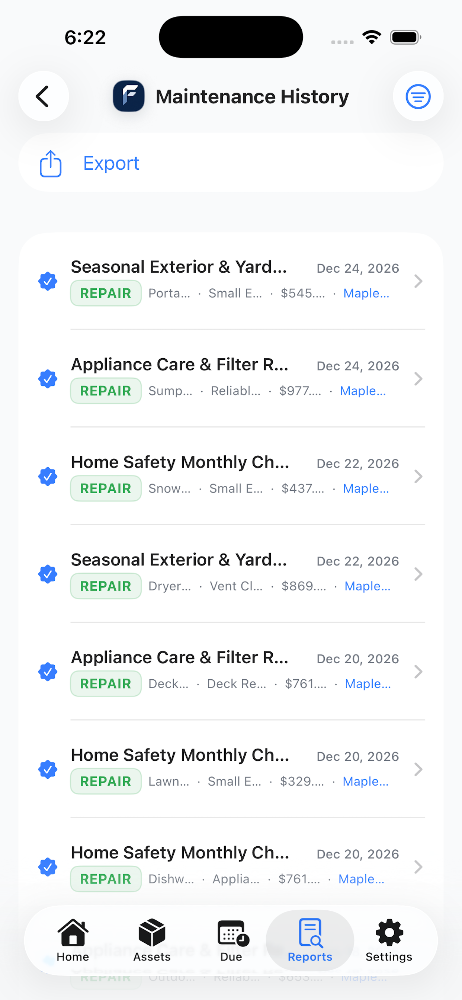
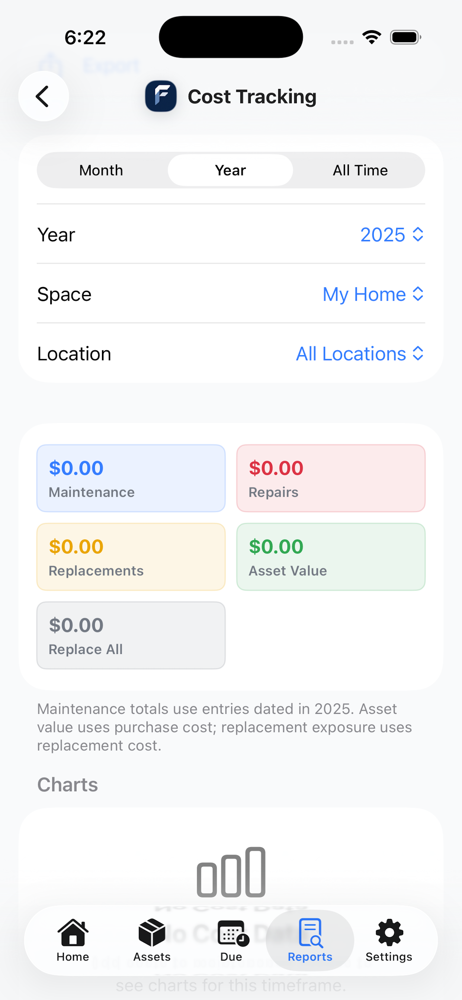
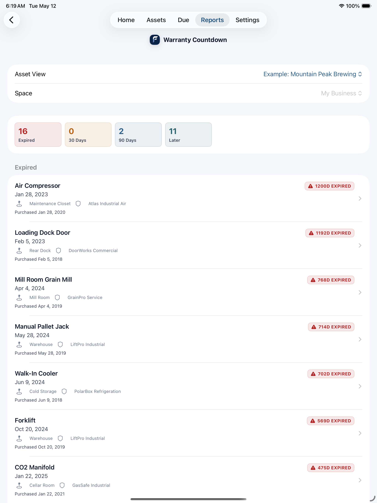
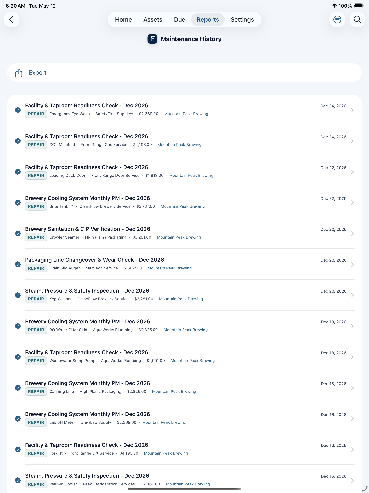

Home ScreenHomeowner
Status pills, overdue reminders, and warranty expiring alerts.

The Maple Ridge Home example, showing what a homeowner sees when tracking 30 home assets across HVAC, plumbing, appliances, safety, and exterior systems.
Status pills, overdue reminders, and warranty expiring alerts.
30 home assets with photos, categories, and last service dates.

Overdue and upcoming tasks organized by date and priority.

Overall health score, completed tasks, spend, and maintenance streak.

Complete log of all completed maintenance with costs and vendors.

Expired and upcoming warranty expirations across all home assets.

Maintenance spend by month, year, location, and type.

Complete home care packet for buyers or new owners.

The Mountain Peak Brewing example, showing a fully populated brewery with 31 assets, 660 maintenance records, cost tracking, and operational reports.
Status bar, needs attention, out of service, and warranty watch sections.

Equipment list with compact filter chips for view, space, group, and location.

Overdue, upcoming, and later reminders in a compact two-line row layout.

Health score, maintenance trend chart, and at-a-glance stats.

Asset record with photos, full maintenance history, and linked reminders.

Expired and upcoming equipment warranty expirations with day counts.

Complete maintenance log with costs, vendors, and service types.

Full operations handoff with asset inventory, history, and open reminders.